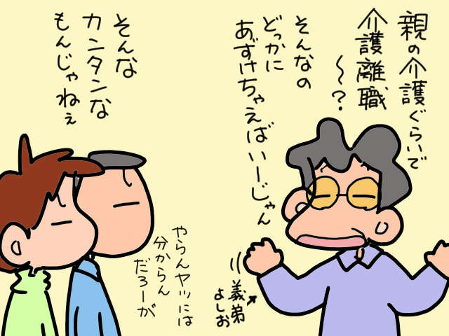
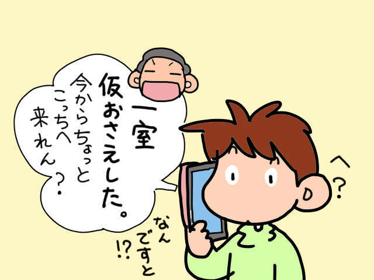
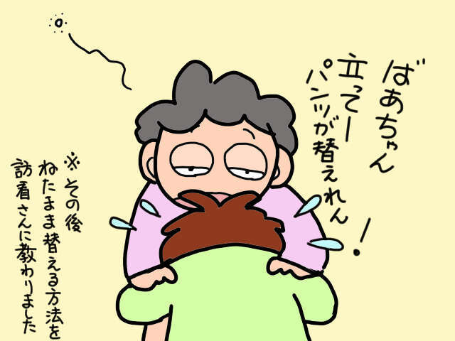
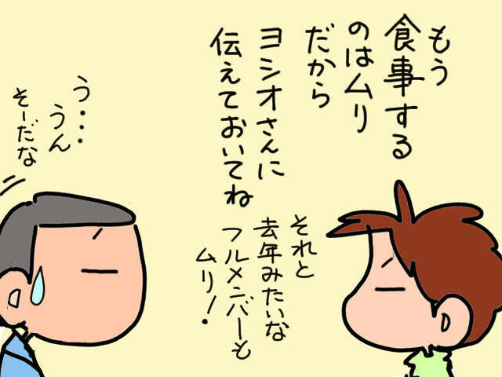
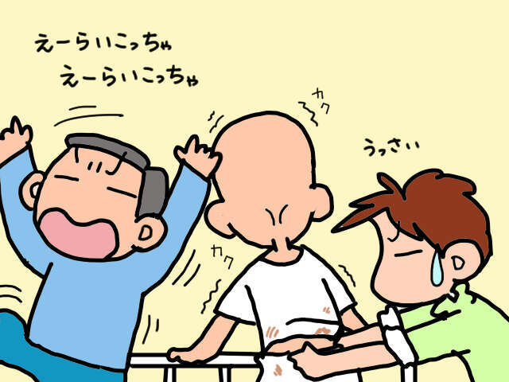
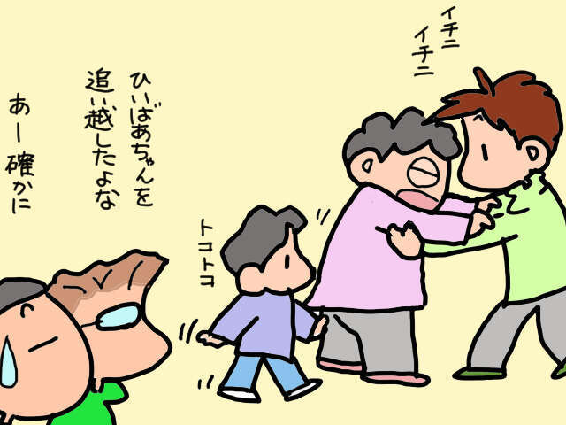
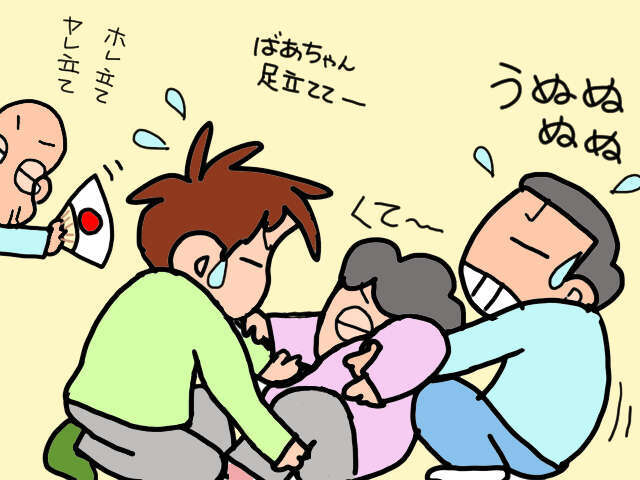
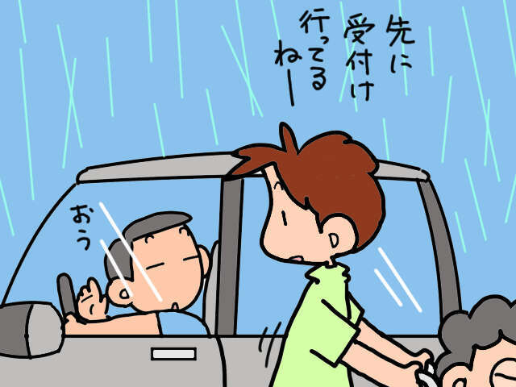
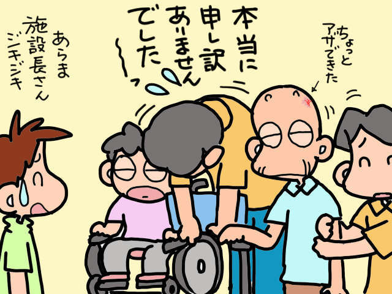

含有关键字“山田阿修罗”的文章
1-

每个人的经历 发布日期：我照顾公公是理所当然的吗？想要入读高中住宅的儿子和他的妻子 vs 昭和个位数……
-

每个人的经历 发布日期：丈夫“暂住高纯”的决定即将走向更糟的境地。照顾公公婆婆我已经累坏了...
-

每个人的经历 发布日期：忙着照顾公公婆婆的日子！这样的生活还要持续多久……？ ...
-
每个人的经历 发布日期：
她和公婆住在一起，整天照顾他们。如果我当时选择了一条不同的路……
-

每个人的经历 发布日期：我姐夫一家人只来过年。尽管我告诉他们今年不可能招待客人......
-
每个人的经历 发布日期：
我婆婆自己起不来。当她睡在地板上的时候，她看到了旁边令人难以置信的一幕！ /山田...
-

每个人的经历 发布日期：谁来照顾我无法控制排便的岳父？我请我老公来处理这件事...
-

每个人的经历 发布日期：成长中的孙子和姻亲无法做越来越多的事情。感受代代相传的“接力棒”……
-

每个人的经历 发布日期：你忘记了如何站立吗？如何叫醒昏倒在床上/山上的痴呆妈妈……
-

每个人的经历 发布日期：一项艰巨的工作，需要两个人！我和行动不便的公公婆婆的号码卡发放手续...
-

每个人的经历 发布日期：我短暂停留了忙碌的 4 天。当你回来后，你的公婆有什么反应？ /山...